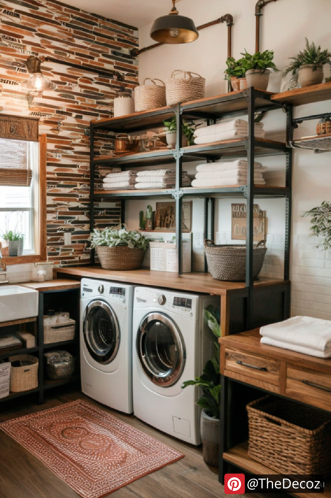
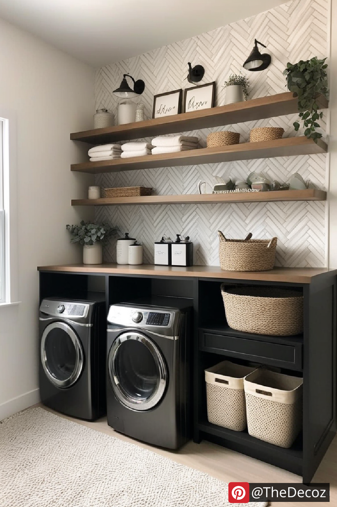
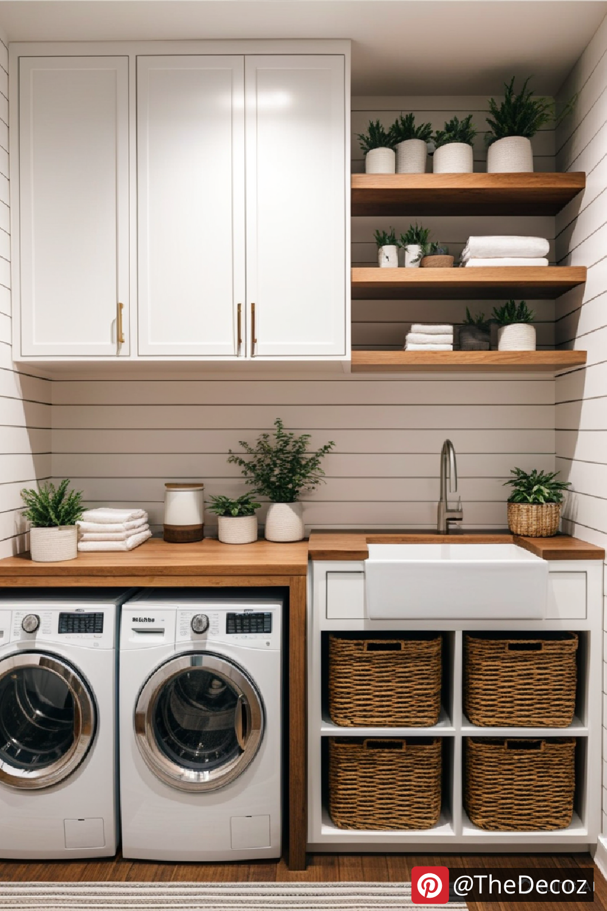
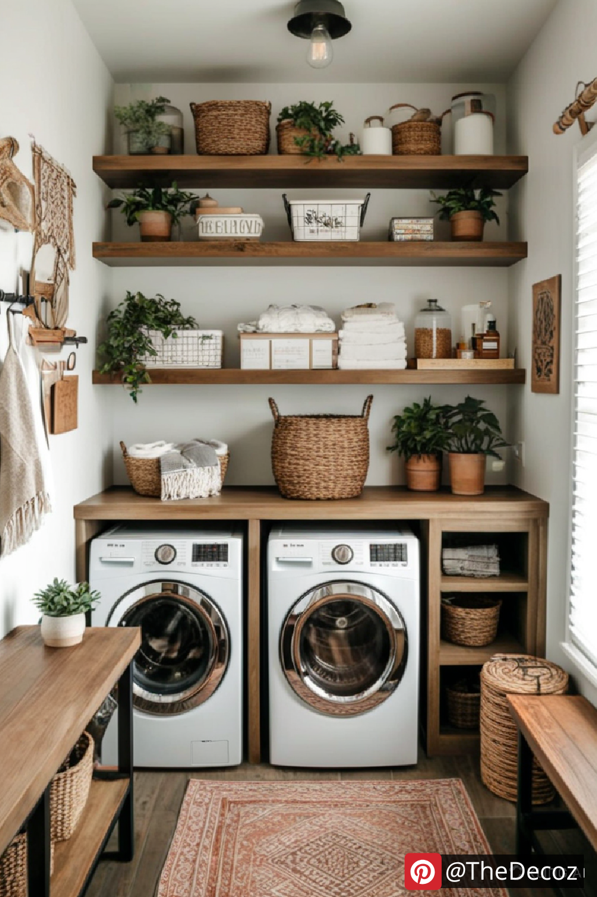
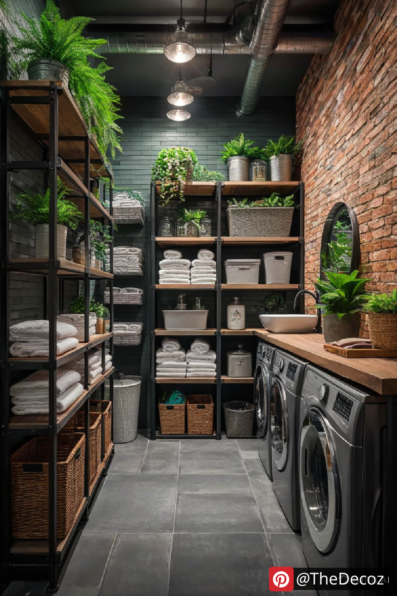

The laundry room is often one of the most overlooked spaces in a home, but with the right decor and organization, it can be both functional and aesthetically pleasing. Whether you have a spacious laundry area or a small corner dedicated to washing and drying, these laundry room decor ideas will help you create a space that is both stylish and efficient.
The right color scheme can set the tone for your laundry room. Light and neutral tones, such as white, beige, or pastel shades, create a clean and airy feel. If you want a bold look, consider navy blue, forest green, or even a pop of yellow to add vibrancy to the space. Wallpaper with fun patterns can also bring character to your laundry room.
Open shelving is a great way to keep your laundry essentials within reach while also adding a decorative touch. Use floating shelves or rustic wooden planks to store detergent, fabric softener, and baskets for organizing smaller items. Adding labeled jars for laundry pods and dryer sheets will give the space a neat and organized appearance.
If you prefer a clutter-free look, opt for closed cabinets to store all your laundry supplies. Stackable bins, rolling carts, and wall-mounted cabinets can help maximize storage space while keeping everything organized. Consider installing a pull-out drying rack or a foldable ironing board for added convenience.
Good lighting is essential in a laundry room. Bright LED lights or pendant fixtures can enhance visibility and make the space feel more inviting. If your laundry room has a window, maximize natural light by using sheer curtains or blinds that allow sunlight to filter in.
A stylish backsplash can instantly elevate the look of your laundry room. Subway tiles, patterned ceramic tiles, or peel-and-stick backsplash options can add a modern and polished touch to your space. This not only enhances aesthetics but also protects the walls from moisture and stains.
Decorative yet functional elements can enhance both the beauty and usability of your laundry space. Consider adding a stylish laundry hamper, woven baskets for organization, or a pegboard for hanging cleaning tools. A chic rug or floor mat can also add warmth and comfort underfoot.
Artwork, framed quotes, or even vintage laundry signs can add personality to your laundry room. Adding greenery, such as small potted plants or hanging planters, can bring a fresh and lively feel to the space. Succulents and low-maintenance plants work well in laundry rooms with limited sunlight.
If space is a concern, choose multi-functional furniture. A folding table that doubles as a workspace, a bench with hidden storage, or a slim rolling cart can maximize functionality while keeping the area organized and visually appealing.
A hanging rod or retractable drying rack is a practical addition to any laundry room. This allows you to air-dry delicate clothing or keep freshly ironed garments wrinkle-free before putting them away.
Make your laundry room more inviting by incorporating pleasant scents. Use essential oil diffusers, scented candles, or lavender sachets to keep the space smelling fresh and clean. You can also use a reed diffuser with calming fragrances like eucalyptus or citrus for a relaxing atmosphere.
Transforming your laundry room into a stylish and functional space doesn’t require a major renovation. With these laundry room decor ideas, you can create a beautiful and efficient area that makes doing laundry a more enjoyable task. Whether you prefer a modern, rustic, or minimalist design, the key is to blend organization with aesthetic appeal to enhance your laundry experience.
    